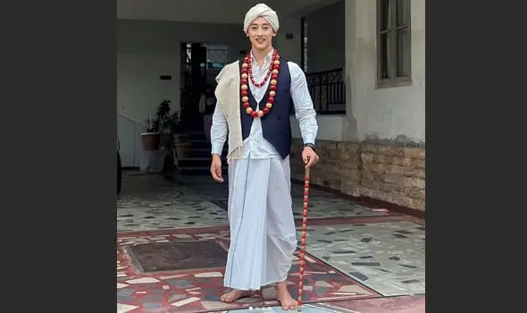

Traditional Dress of Meghalaya Men
However, the traditional dress of Meghalaya Men varies from clan to clan. The attires of the Jaintia tribe and the Khasi tribe are similar. A long, unstitched dhoti is wrapped around the waist region. It is then complimented with an embedded jacket or shirt. On occasions like Ka Pom-Blang Nongkrem and Ka Shad Suk Mynsie Meghalaya, men are seen wearing a silk turban and carrying a swear in one hand. Image Credit: instagram.com/songashim_rungsung While the Garo tribe wears a handwoven loincloth, these traditional male attires are restricted to festivals and special events. But the men can be seen blaring their tradition with pride.